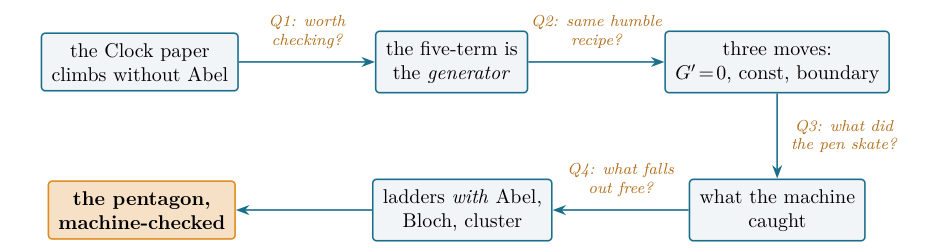

The Pentagon, Machine-Checked: Abel’s five-term relation for the dilogarithm in Lean 4
At a glance
What the paper contributes
A machine-checked proof of the identity that generates the weight-2 theory of the dilogarithm, on the dilogarithm built in Lean by the companion paper.
- Abel’s five-term relation (Theorem 1), sorry-free in Lean 4: for x, y in (0,1), L(x) + L(y) = L(xy) + L(x(1−y)/(1−xy)) + L(y(1−x)/(1−xy)), with L the Rogers L-function.
- The classical route, made formal: the five-term difference has zero derivative in x (nine logarithms collapse into a basis of five), so it is constant; its value is read off as x → 0⁺, where log t · log(1−t) → 0 by a squeeze.
- Three reusable blocks: the derivative of L on (0,1), L(t) → 0 as t → 0⁺, continuity of L on (0,1).
- The mathematics is classical (Spence, Abel, Rogers); the paper claims the formalization, after a documented search of proof-assistant libraries.
🚀 Start here: Theorem 1: Abel’s five-term relation for the Rogers L-function on (0,1)².
Main results:
- Theorem 1: Abel’s five-term relation for the Rogers L-function on (0,1)²
🗺️ Map of the results (click a box to go to it)
Dependencies in the written proof: an arrow A → B means that this proof of B uses A. Every result rests on its written proof; the tags record what was checked besides, and each statement's “Evidence & scope” block says how far. The colour of a box is its strongest tag, in the order above; the tags in the box give the rest. Boxes with a thick border are the main results; click a box to read the statement.
📐 Setting (copied from the paper, §1)
The cleanest statement uses the Rogers \(\operatorname{L}\)-function \(\operatorname{L}(x):={\mathrm{Li}_2}(x)+\tfrac 12\log x\log (1-x)\), which absorbs the stray logarithms of the raw \({\mathrm{Li}_2}\) form and turns the relation into a pure sum of five \(\operatorname{L}\) values. (§2) Fix \(y\in (0,1)\) and set
The theorem is \(G(x)=-\operatorname{L}(y)\).
Abstract.
I give a machine-checked, sorry-free proof, in Lean 4 over Mathlib, of Abel’s five-term relation for the dilogarithm. With \(\operatorname{L}\) the Rogers \(\operatorname{L}\)-function it reads, for \(x,y\in (0,1)\),
This single identity is the whole weight-2 theory in one line: by theorems of Wojtkowiak and de Jeu, every functional equation of \({\mathrm{Li}_2}\) with rational arguments is a consequence of it; it is the defining relation of the Bloch group and the pentagon of cluster algebras and of the quantum dilogarithm. A companion paper, The Clock That Never Ticks, built a dilogarithm in Lean from scratch and climbed the golden-ratio ladder without this relation, leaving it explicitly open; this paper closes that thread. The proof is the classical differentiation argument made fully rigorous: fixing \(y\), the five-term difference has identically zero derivative on \((0,1)\)—nine logarithmic terms collapse into a basis of five and the rest is ring—so it is constant, and its boundary value as \(x\to 0^+\) is computed by squeezing \(\log x\cdot \log (1-x)\to 0\). I am exact about the boundary: the mathematics is entirely classical (Spence, Abel, Rogers; Wojtkowiak’s and de Jeu’s universality); the contribution is the formalization—to the best of my knowledge the first machine-checked five-term relation, on the first machine-checked dilogarithm, in any proof assistant—together with three reusable building blocks. The headline theorem and its blocks depend only on propext, Classical.choice and Quot.sound.
How to read this paper. It is the story of four questions, each opening a section and handing the reader the next, walking from a puzzle to a closed thread. The puzzle: a companion paper reached the dilogarithm’s deepest evaluations without the identity everyone calls central—so is the identity worth machine-checking at all (Q1)? It is, because it is not one more identity but the generator of all of them; that earns it the proof (Q2), a proof the machine sharpened in one place a pen would skate over (Q3); and once it is certified, the showpieces the companion reached the long way round fall out as corollaries (Q4). If you read only one thing, read Theorem 1 and Figure 2; the Lean inventory is Table 2; the honest limits are in Section 6; reproduction is three commands.
🖼️ Figure 1

The reader’s map. The thread starts where the companion Clock paper left it (the golden ladder climbed without Abel) and closes at the machine-checked pentagon; each arrow is the question its section answers. Every node is a block of sorry-free Lean.
1 Q1: why machine-check an identity the companion paper did without?
Some identities matter for what they assert; this one matters for where it keeps reappearing. Take the five numbers that sit at the corners of a pentagon, apply the dilogarithm to each, and the five values are not free: they obey one fixed relation, the same one whatever pentagon you start from. That single fact is, in disguise, the defining relation of the Bloch group in hyperbolic geometry, the pentagon of mutations in cluster algebra, and the pentagon identity of the quantum dilogarithm in mathematical physics—one relation wearing three masks. It is two centuries old and has been rediscovered under a dozen names; and yet, after a decade of one of the most ambitious formalization efforts ever attempted, no proof assistant had ever been told it is true. This paper tells one—and then asks why such a thing should be everywhere at once.
A taste of what the relation does, before any theory. Put \(x=y=\tfrac 12\). After \(\tfrac {(1/2)(1/2)}{1-1/4}=\tfrac 13\) the relation below collapses to
since \(\operatorname{L}(\tfrac 12)=\pi ^2/12\). That a sum of three dilogarithm values at \(\tfrac 14\) and \(\tfrac 13\) is exactly \(\pi ^2/6\) is not obvious; it is one of infinitely many shadows of a single two-variable law—and that law is what we machine-check here.
History bead. The dilogarithm is Euler’s (1760s). Its functional equations were charted by Landen (1780), Spence (1809), Abel (1827, published 1881 [ 1 ] ) and Kummer; Rogers gave the symmetric form in 1907 [ 2 ] . The five-term relation’s depth became structural only later, with Bloch’s regulators [ 7 ] and the group that bears his name.
There is a reason to hesitate. A companion paper in this line, The Clock That Never Ticks [ 16 ] , built a dilogarithm in Lean from scratch—its series, its derivative \(-\log (1-x)/x\), Euler’s reflection, Landen’s transformation, the duplication formula—and then reached the subject’s classical showpieces, the golden-ratio evaluations \({\mathrm{Li}_2}(1/\varphi )\) and \({\mathrm{Li}_2}(1/\varphi ^2)\), by a three-by-three linear system, with no five-term relation at all. Every textbook reaches those values through Abel; the formalization found a side door. So the honest first question is not how to prove the five-term relation but whether to bother: if the showpieces are reachable without it, what does the identity earn its keep on?
The answer is that the five-term relation is not one identity among several. It is the generator of the whole subject. Wojtkowiak proved that every one-variable functional equation of \({\mathrm{Li}_2}\) with rational arguments is a \(\mathbb {Z}\)-linear combination of instances of the five-term relation; de Jeu extended this to any number of variables [ 5 , 6 ] . The same relation defines the Bloch group, hence governs scissors-congruence invariants and the volumes of hyperbolic \(3\)-manifolds [ 7 , 8 , 9 ] ; in cluster algebras it is the pentagon, the relation of five mutations [ 11 ] ; and in its quantum form it is the pentagon identity of the Faddeev–Kashaev quantum dilogarithm [ 12 ] . The companion’s side door climbs one ladder; the five-term relation is the staircase. That is what is worth certifying. Can the same humble toolkit that proved reflection and Landen also reach the generator?
The cleanest statement uses the Rogers \(\operatorname{L}\)-function \(\operatorname{L}(x):={\mathrm{Li}_2}(x)+\tfrac 12\log x\log (1-x)\), which absorbs the stray logarithms of the raw \({\mathrm{Li}_2}\) form and turns the relation into a pure sum of five \(\operatorname{L}\) values:
🖼️ Figure 2
The five arguments on a cycle. The five-fold symmetry of this pentagon is the combinatorial shadow shared by the Bloch-group relation, the cluster-algebra mutation pentagon, and the quantum-dilogarithm pentagon identity.
2 Q2: can the generator be reached by the same three-move recipe?
History bead. The differentiation proof is the oldest one: fix one variable, show the derivative in the other vanishes, evaluate the constant at an endpoint. It is essentially Abel’s, repeated in Lewin [ 3 ] and Zagier [ 4 ] . The whole question is whether “the derivative vanishes” and “evaluate at the endpoint” survive being made fully formal.
For all \(x,y\in (0,1)\),
Lean · oursshow
✅ Checked when this page was built: FiveTerm.lean compiles with Lean 4.35.0, no errors, no sorry. Axioms — rogersL_fiveterm, fiveterm_hasDerivAt_zero: propext, Classical.choice, Quot.sound.
Reproduce: Lean 4.35.0, Mathlib f0b4c8150aa0; in that Lean project, lake env lean FiveTerm.lean (SHA-256 of the compiled file: ce29fa490a366ddb…; a source page on this site may show it with comments edited, under its own hash).
Trust base: 🔒 kernel only. Lean: 2 results, standard axioms only
Proof: in this note·Formalized: Lean 4, by the author (public formalizations repository)·Covers: the whole statement·Cite: Theorem 1, p. 3, doi:10.5281/zenodo.20682716
🆕 Classical and new: classical (Spence, Abel, Rogers); the paper claims the formalization: «to the best of my knowledge the first machine-checked five-term relation, on the first machine-checked dilogarithm, in any proof assistant» (§6), from a documented search of June 2026.
Formalized in Lean (see the linked declarations).
💡 In plain words (commentary, not part of the paper)
1. Take two numbers \(x,y\) between \(0\) and \(1\) and form the three numbers \(xy\), \(\tfrac {x(1-y)}{1-xy}\) and \(\tfrac {y(1-x)}{1-xy}\). The Rogers function \(\operatorname{L}\) of the first two adds up to \(\operatorname{L}\) of the other three. For \(x=y=\tfrac 12\) the three numbers are \(\tfrac 14,\tfrac 13,\tfrac 13\), and since \(\operatorname{L}(\tfrac 12)=\pi ^2/12\) the relation says \(\operatorname{L}(\tfrac 14)+2\operatorname{L}(\tfrac 13)=\pi ^2/6\). 2. Why it is true (the classical argument, here checked by Lean): fix \(y\) and look at the difference \(G(t)\) of the two sides as a function of \(t\). Its derivative is zero on \((0,1)\), because every logarithm that appears splits into the five logarithms of \(t\), \(y\), \(1-t\), \(1-y\), \(1-ty\) and all coefficients cancel. So \(G\) is constant, and its value is read off as \(t\to 0^+\), where \(\operatorname{L}(t)\to 0\) by squeezing \(\log t\cdot \log (1-t)\) between \(0\) and \(2(-t\log t)\). 3. New and not new, as the paper says: the identity is classical (Spence, Abel, Rogers) and the proof is the standard differentiation proof; the paper claims only the formalization, to the author’s knowledge the first machine-checked five-term relation in any proof assistant, after a documented search (§6), on the dilogarithm built in Lean by the companion paper.
The recipe is the one the companion paper used for every elementary identity: differentiate, conclude constant, evaluate at the boundary. Fix \(y\in (0,1)\) and set
The theorem is \(G(x)=-\operatorname{L}(y)\). Three movements.
1. The derivative vanishes.
For \(x,y\in (0,1)\) all three composite arguments again lie in \((0,1)\), so every term is differentiable. With \(\operatorname{L}'(t)=-\tfrac 12\big( \tfrac {\log (1-t)}{t}+\tfrac {\log t}{1-t}\big)\), the chain rule writes \(G'(t)\) as four such expressions weighted by the derivatives of the composite arguments. Every logarithm that occurs—of \(t\), of \(ty\), of the two fractional arguments and their complements—expands, by \(\log (ab)=\log a+\log b\) and \(\log (a/b)=\log a-\log b\), into the five-element basis \(\{ \log t,\log y,\log (1-t),\log (1-y),\log (1-ty)\} \). In that basis \(G'(t)\) is a rational expression whose every coefficient cancels: \(G'\equiv 0\). In Lean this is the one delicate step (fiveterm_hasDerivAt_zero): the nine logarithms are rewritten into the basis and the rational remainder is cleared and closed by ring.
2. Hence \(G\) is constant.
A function with vanishing derivative on the open connected interval \((0,1)\) is constant there—Mathlib’s IsOpen.is_const_of_deriv_eq_zero, the mean-value theorem in disguise. So \(G(x)=G(t)\) for every \(t\in (0,1)\).
3. The boundary value.
As \(t\to 0^+\), \(ty\to 0\), \(\tfrac {t(1-y)}{1-ty}\to 0\) and \(\tfrac {y(1-t)}{1-ty}\to y\), so \(G(t)\to \operatorname{L}(0)-\operatorname{L}(0)-\operatorname{L}(0)-\operatorname{L}(y)=-\operatorname{L}(y)\)—provided \(\operatorname{L}\) is right-continuous at \(0\) with \(\operatorname{L}(0)=0\). This is the one analytic subtlety, the same one the companion paper isolated. \(\operatorname{L}(t)={\mathrm{Li}_2}(t)+\tfrac 12\log t\log (1-t)\), and while \({\mathrm{Li}_2}\) is continuous, \(\log t\cdot \log (1-t)\) is an indeterminate \((-\infty )\cdot 0\). It is tamed by a squeeze: on \((0,\tfrac 12]\) one has \(-\log (1-t)\le 2t\) (from \(\log z\ge 1-z^{-1}\)), so
because \(t\log t\to 0\) (Mathlib’s Real.continuous_mul_log). Thus \(G\to -\operatorname{L}(y)\); being constant and equal to \(G(x)\) near \(0\), it equals \(-\operatorname{L}(y)\), which is Theorem 1. □
So the answer to Q2 is yes: the generator needs no machinery the elementary identities did not—only that the nine-into-five cancellation actually close. And there the pen and the machine parted company.
3 Q3: what did the machine catch that the pen skates over?
History bead. “\(G'\equiv 0\) by a short calculation” is how every textbook dispatches step 1. The phrase hides a clearing of denominators that, on paper, one trusts. A proof assistant does not trust it; it executes it, and execution has an order.
The cancellation was checked numerically to thirty digits before it was formalized—and the formalization still caught a subtlety the eye misses. When field_simp clears the denominators of \(G'(t)\) it silently reorders the product \(x\cdot y\) to \(y\cdot x\), and then needs \(1-yx\neq 0\), in that term order and already in context, to discharge the inverse it produces. The fix is one line—state the non-vanishing fact for both orders, before the simplification—but finding it cost more than the rest of the proof.
What a proof assistant earns its keep on On paper, “clear denominators and the rest cancels” is one phrase. Formally it is an ordered rewrite: field_simp may reorder a product (\(x y \rightsquigarrow y x\)) and then demand the matching non-vanishing fact (\(1-yx\neq 0\)) in that order, already in context. The diagnostic, banked for the next weight-2 development: if field_simp leaves an uncleared \((1-a)^{-1}\), the missing hypothesis is \((1-a)\neq 0\) in the term order field_simp produced—supply both \(1-xy\neq 0\) and its commute \(1-yx\neq 0\).
This is the whole of the new mathematics, and it is honestly small: not a theorem but a discipline. It is also exactly the kind of step that justifies machine-checking an identity whose informal proof everyone already believes. With the generator certified, what does the companion paper’s long way round now buy us for free?
4 Q4: with the pentagon certified, what falls out for free?
History bead. The golden-ratio evaluations are Landen’s (1780) and Rogers’ (1907 [ 2 ] ); their modern role as conformal central charges belongs to the thermodynamic Bethe ansatz of the 1990s [ 14 , 15 , 13 ] . Every classical route to them passes through the five-term relation; the companion paper took a detour, and now the main road is open.
The five-term relation is a machine that turns a choice of \((x,y)\) into a closed relation among five \(\operatorname{L}\) values. Feed it the right points and the catalogue of the subject prints out (Table 1). Two instances are especially clean because their arguments coincide. At \((x,y)=(\tfrac 12,\tfrac 12)\) the two fractional arguments are both \(\tfrac 13\), giving \(2\operatorname{L}(\tfrac 12)=\operatorname{L}(\tfrac 14)+2\operatorname{L}(\tfrac 13)\). At \((x,y)=(1/\varphi ,1/\varphi )\), the three composite arguments all collapse to \(1/\varphi ^2\) (because \(1-1/\varphi ^2=1/\varphi \) and \(1-1/\varphi =1/\varphi ^2\)), so the five-term relation reads \(2\operatorname{L}(1/\varphi )=3\operatorname{L}(1/\varphi ^2)\)—and with the ladder values \(\operatorname{L}(1/\varphi )=\pi ^2/10\), \(\operatorname{L}(1/\varphi ^2)=\pi ^2/15\) this is the exact identity \(\pi ^2/5=\pi ^2/5\). The golden ladder the companion reached by a side door is, from here, a single substitution.
|
\((x,y)\) |
arguments |
the relation reads |
exact value |
|
\((\tfrac 12,\tfrac 12)\) |
\(\tfrac 14,\tfrac 13,\tfrac 13\) |
\(2\operatorname{L}(\tfrac 12)=\operatorname{L}(\tfrac 14)+2\operatorname{L}(\tfrac 13)\) |
\(\operatorname{L}(\tfrac 14)+2\operatorname{L}(\tfrac 13)=\tfrac {\pi ^2}{6}\) |
|
\((\tfrac 1\varphi ,\tfrac 1\varphi )\) |
\(\tfrac 1{\varphi ^2},\tfrac 1{\varphi ^2},\tfrac 1{\varphi ^2}\) |
\(2\operatorname{L}(\tfrac 1\varphi )=3\operatorname{L}(\tfrac 1{\varphi ^2})\) |
\(\tfrac {\pi ^2}{5}=\tfrac {\pi ^2}{5}\) |
The recipe: read off a \(\pi ^2\)-evaluation in three lines Pick any \(x,y\in (0,1)\) at which the four arguments are nice. (1) Form \(xy,\ \tfrac {x(1-y)}{1-xy},\ \tfrac {y(1-x)}{1-xy}\). (2) Apply \(\operatorname{L}(x)+\operatorname{L}(y)=\) their sum, with a machine-checked guarantee. (3) Substitute any \(\operatorname{L}\) values you know.
Worked: take \(x=y=\tfrac 12\). Then \(xy=\tfrac 14\) and both fractions are \(\tfrac 13\), so \(2\, \operatorname{L}(\tfrac 12)=\operatorname{L}(\tfrac 14)+2\, \operatorname{L}(\tfrac 13)\). Since \(\operatorname{L}(\tfrac 12)= {\mathrm{Li}_2}(\tfrac 12)+\tfrac 12\log ^2\! 2\) and \({\mathrm{Li}_2}(\tfrac 12)=\tfrac {\pi ^2}{12}-\tfrac 12\log ^2\! 2\), the log terms cancel and \(\operatorname{L}(\tfrac 12)=\tfrac {\pi ^2}{12}\); hence \(\operatorname{L}(\tfrac 14)+2\, \operatorname{L}(\tfrac 13)=\tfrac {\pi ^2}{6}\)—a closed form for three dilogarithm values, certified.
So the thread the companion paper left hanging is closed. It climbed the golden ladder without Abel and asked whether the side door was a curiosity or a necessity; the answer is that it was a shortcut, and the staircase it bypassed is now machine-checked. The four questions end where they began—at a sum of dilogarithm values equal to \(\pi ^2/6\)—but the identity behind it is no longer a shadow on the wall: it is a theorem in the library, with the whole weight-2 subject hanging from it.
5 The building blocks
The headline rests on three reusable pieces, each sorry-free with the standard three axioms (Table 2).
On \((0,1)\), \(\displaystyle \operatorname{L}'(x)=-\tfrac 12\Big(\tfrac {\log (1-x)}{x}+\tfrac {\log x}{1-x}\Big)\).
Lean · oursshow
✅ Checked when this page was built: FiveTerm.lean compiles with Lean 4.35.0, no errors, no sorry. Axioms — hasDerivAt_rogersL: propext, Classical.choice, Quot.sound.
Reproduce: Lean 4.35.0, Mathlib f0b4c8150aa0; in that Lean project, lake env lean FiveTerm.lean (SHA-256 of the compiled file: ce29fa490a366ddb…; a source page on this site may show it with comments edited, under its own hash).
Trust base: 🔒 kernel only. Lean: 1 result, standard axioms only
Proof: in this note·Formalized: Lean 4, by the author (public formalizations repository)·Covers: the whole statement·Cite: Lemma 1, p. 6, doi:10.5281/zenodo.20682716
🆕 Classical and new: the paper: one of «three reusable building blocks» of the formalization (§5); «the same derivative scheme the companion used for reflection and Landen».
↳ Used in: Theorem 1
Formalized in Lean (see the linked declarations).
The same derivative scheme the companion used for reflection and Landen: combine \({\mathrm{Li}_2}'(x)=-\log (1-x)/x\) with the product rule for \(\tfrac 12\log x\log (1-x)\).
\(\operatorname{L}(t)\to 0\) as \(t\to 0^+\).
Lean · oursshow
✅ Checked when this page was built: FiveTerm.lean compiles with Lean 4.35.0, no errors, no sorry. Axioms — tendsto_rogersL_nhdsGT_zero: propext, Classical.choice, Quot.sound.
Reproduce: Lean 4.35.0, Mathlib f0b4c8150aa0; in that Lean project, lake env lean FiveTerm.lean (SHA-256 of the compiled file: ce29fa490a366ddb…; a source page on this site may show it with comments edited, under its own hash).
Trust base: 🔒 kernel only. Lean: 1 result, standard axioms only
Proof: in this note·Formalized: Lean 4, by the author (public formalizations repository)·Covers: the whole statement·Cite: Lemma 2, p. 6, doi:10.5281/zenodo.20682716
🆕 Classical and new: the paper: a reusable block; «the only place the proof leaves pure algebra for analysis» (§5).
↳ Used in: Theorem 1
Formalized in Lean (see the linked declarations).
The \({\mathrm{Li}_2}\) part is continuous on \([-1,1]\); the log-product is squeezed to \(0\) by \(2(-t\log t)\). This is the only place the proof leaves pure algebra for analysis.
\(\operatorname{L}\) is continuous at every \(x\in (0,1)\).
Lean · oursshow
✅ Checked when this page was built: FiveTerm.lean compiles with Lean 4.35.0, no errors, no sorry. Axioms — continuousAt_rogersL: propext, Classical.choice, Quot.sound.
Reproduce: Lean 4.35.0, Mathlib f0b4c8150aa0; in that Lean project, lake env lean FiveTerm.lean (SHA-256 of the compiled file: ce29fa490a366ddb…; a source page on this site may show it with comments edited, under its own hash).
Trust base: 🔒 kernel only. Lean: 1 result, standard axioms only
Proof: in this note·Formalized: Lean 4, by the author (public formalizations repository)·Covers: the whole statement·Cite: Lemma 3, p. 6, doi:10.5281/zenodo.20682716
🆕 Classical and new: the paper: a reusable block, «needed for the one surviving boundary term» (§5).
↳ Used in: Theorem 1
Formalized in Lean (see the linked declarations).
Needed for the one surviving boundary term, \(\operatorname{L}\big(\tfrac {y(1-t)}{1-ty}\big)\to \operatorname{L}(y)\).
|
Lean name |
statement |
where |
|
rogersL_fiveterm |
the five-term relation (Theorem 1) |
§2 |
|
fiveterm_hasDerivAt_zero |
\(G'\equiv 0\): nine logs collapse to five |
§2–3 |
|
hasDerivAt_rogersL |
\(\operatorname{L}'(x)=-\tfrac 12(\tfrac {\log (1-x)}{x}+\tfrac {\log x}{1-x})\) |
§5 |
|
tendsto_rogersL_nhdsGT_zero |
\(\operatorname{L}(t)\to 0\) as \(t\to 0^+\) |
§5 |
|
continuousAt_rogersL |
\(\operatorname{L}\) continuous on \((0,1)\) |
§5 |
6 The boundary of the contribution
Everything here that is mathematics is classical. The five-term relation is Spence’s and Abel’s; the Rogers \(\operatorname{L}\)-function is Rogers’s (1907); the universality statements are Wojtkowiak’s and de Jeu’s; the differentiation proof is standard. I claim no new identity and no new inequality. The contributions are three: the formalization (to my knowledge the first machine-checked five-term relation, on the first machine-checked dilogarithm, in any proof assistant); the reusable infrastructure—the Rogers-\(\operatorname{L}\) derivative, the right-continuity at \(0\) via the \(-t\log t\) squeeze, and the interior continuity—which is exactly what any further weight-2 development (ladders, the Bloch group, the Bloch–Wigner five-term) will need; and the proof-engineering record of Section 3, where the nine-into-five cancellation is the kind of step a formal check earns its keep on.
Prior formalizations. The priority claim rests on a documented search, not a feeling. On 2026-06-12/13 I searched, for the dilogarithm and for the five-term relation: Mathlib (Loogle and grep; no dilog/polylog declaration exists, only a comment referring to \({\mathrm{Li}_2}\)) and the wider Lean community repositories; the Isabelle Archive of Formal Proofs; the Coq/Rocq ecosystem (coq-community, opam); HOL Light; and Metamath (set.mm). None contains the dilogarithm as an analytic object with its functional equations, and none contains the five-term relation. The structural backstop is simpler than any search: the relation needs a formalized \({\mathrm{Li}_2}\) to be stated, and no proof assistant had one until the companion paper built it—so a machine-checked five-term relation cannot predate that. As always, such a claim is made to the best of my knowledge.
Size of the formalization. The new work for this paper is Dilog/FiveTerm.lean: \(243\) lines, five theorems (Table 2), elaborating in \(17\) s once Mathlib and the companion’s Dilog/Basic.lean are cached. It sits on Dilog/Basic.lean (\(581\) lines: the dilogarithm, its derivative, reflection, Landen, duplication) from the companion paper, and on Mathlib for all the analysis (term-by-term differentiation, the mean-value constancy theorem, the \(-t\log t\) limit). The proof reuses Mathlib’s analytic library wholesale; what is original is the \(243\)-line bridge and the three reusable blocks. Every theorem depends only on the three standard axioms (propext, Classical.choice, Quot.sound); there is no native_decide, no sorry, and no custom axiom.
On methodology. The formalization was done with an AI assistant (Claude, Anthropic), under the discipline of the companion paper: the central cancellation verified numerically to thirty digits before formalizing, and every named theorem checked by #print axioms to depend only on propext, Classical.choice and Quot.sound. Correctness does not rest on the assistant: the Lean kernel checks every proof. The mathematics and the claims are the author’s responsibility.
7 Open questions
The pentagon is now a theorem in the library. Standing on it, six questions worth the next effort—the last one is the one I would keep.
Ladders as a generated family. Each row of Table 1 is the five-term relation evaluated at a point; mechanizing the substitution so that every ladder prints from the one theorem would turn a catalogue into a corollary. How much of the classical table of dilogarithm values is a finite orbit of the five-term relation under \(\mathbb {Q}\)-rational substitution—and where does that orbit stop?
The Bloch–Wigner sequel. The same relation holds for the single-valued Bloch–Wigner function on \(\mathbb {C}\), where it underlies hyperbolic volume and scissors congruence [ 8 , 9 , 10 ] .
Cite: Question 1, p. 7, doi:10.5281/zenodo.20682716
↳ Not used by another result of the paper.
What is the smallest faithful Lean account of the Bloch group in which \(\mathrm{Vol}\) of a hyperbolic \(3\)-manifold becomes a computable, certified number? The quantum limit. The Faddeev–Kashaev quantum dilogarithm satisfies a pentagon identity [ 12 ] whose \(\hbar \to 0\) limit is the relation proved here.
Cite: Question 2, p. 7, doi:10.5281/zenodo.20682716
↳ Not used by another result of the paper.
Can a proof assistant make that limit a theorem rather than a heuristic—and would doing so expose, as the classical proof did, a step the physics literature skates over? Universality, formalized. Wojtkowiak and de Jeu reduce every rational functional equation of \({\mathrm{Li}_2}\) to the five-term relation [ 5 , 6 ] . That reduction is an algorithm.
Cite: Question 3, p. 7, doi:10.5281/zenodo.20682716
↳ Not used by another result of the paper.
What would it take to run it inside Lean, so that an arbitrary claimed dilogarithm identity is decided against the generator? What the machine sees and the page hides. Section 3 found one place where the formal proof was strictly sharper than the informal one—an ordered rewrite the pen trusts.
Cite: Question 4, p. 7, doi:10.5281/zenodo.20682716
↳ Not used by another result of the paper.
In a subject two centuries old and re-proved a dozen times, how many such silent steps remain, and is “the proof a human believes” ever quite the proof a machine will accept? One to keep. The five-term relation says five dilogarithm values, read around a pentagon, sum to nothing new. It is the defining relation of the Bloch group, of cluster mutation, of the quantum dilogarithm—one identity wearing the masks of geometry, algebra, and physics.
Cite: Question 5, p. 7, doi:10.5281/zenodo.20682716
↳ Not used by another result of the paper.
Now that it is machine-checked, the question is not whether it is true but why it is everywhere: what is it about a pentagon that so many parts of mathematics are, underneath, the same five steps that return you home?
Cite: Question 6, p. 7, doi:10.5281/zenodo.20682716
↳ Not used by another result of the paper.
Reproducing
git clone https://github.com/karlesmarin/godsil-gutman-lean cd godsil-gutman-lean && lake exe cache get lake build Dilog.FiveTerm
Lean v4.30.0-rc2, Mathlib pin 701fb6e9. The relation is Dilog.rogersL_fiveterm in Dilog/FiveTerm.lean; its supports are in Table 2. Each is checked by #print axioms to depend only on propext, Classical.choice, Quot.sound.
📊 Tables
Every table of the paper, in its order: click one to unfold it, with where the paper cites it, how its numbers were checked, and its data as CSV. The typeset table is one click away, on its page of the PDF.
Table 1. The generator at work: two choices of $(x,y)$ whose composite arguments coincide, and the exact identity each prints. Both rows are re-verified to thirty digits; the first is hand-checkable from $\operatorname{L}(\tfrac12)=\pi^2/12$, the second from the ladder values $\operatorname{L}(1/\varphi)=\pi^2/10$, $\operatorname{L}(1/\varphi^2)=\pi^2/15$. Euler's reflection $\operatorname{L}(x)+\operatorname{L}(1-x)=\pi^2/6$ is not an instance of the five-term relation but its companion—the symmetrization that makes the Rogers form clean—and is proved separately.
| $(x,y)$ | arguments | the relation reads | exact value |
| $(\tfrac12,\tfrac12)$ | $\tfrac14,\tfrac13,\tfrac13$ | $2\operatorname{L}(\tfrac12)=\operatorname{L}(\tfrac14)+2\operatorname{L}(\tfrac13)$ | $\operatorname{L}(\tfrac14)+2\operatorname{L}(\tfrac13)=\tfrac{\pi^2}{6}$ |
| $(\tfrac1\varphi,\tfrac1\varphi)$ | $\tfrac1{\varphi^2},\tfrac1{\varphi^2},\tfrac1{\varphi^2}$ | $2\operatorname{L}(\tfrac1\varphi)=3\operatorname{L}(\tfrac1{\varphi^2})$ | $\tfrac{\pi^2}{5}=\tfrac{\pi^2}{5}$ |
Table 2. The load-bearing results, all sorry-free in Dilog/FiveTerm.lean of
the repository, on the dilogarithm of Dilog/Basic.lean from the companion paper.
Axioms of every entry: propext, Classical.choice, Quot.sound only.
| Lean name | statement | where |
rogersL_fiveterm | the five-term relation (Theorem 1) | §2 |
fiveterm_hasDerivAt_zero | $G'\equiv0$: nine logs collapse to five | §2–3 |
hasDerivAt_rogersL | $\operatorname{L}'(x)=-\tfrac12(\tfrac{\log(1-x)}{x}+\tfrac{\log x}{1-x})$ | §5 |
tendsto_rogersL_nhdsGT_zero | $\operatorname{L}(t)\to0$ as $t\to0^+$ | §5 |
continuousAt_rogersL | $\operatorname{L}$ continuous on $(0,1)$ | §5 |
References
- 1
N. H. Abel, Œuvres complètes (L. Sylow, S. Lie, eds.), vol. II, Grøndahl, Christiania, 1881; the five-term relation is in the note on the dilogarithm. 🔎 find it
- 2
L. J. Rogers, On function sum theorems connected with the series \(\sum x^n/n^2\), Proc. London Math. Soc. 4 (1907) 169–189. 🔎 find it
- 3
L. Lewin, Polylogarithms and Associated Functions, North-Holland, 1981. 🔎 find it
- 4
D. Zagier, The dilogarithm function, in Frontiers in Number Theory, Physics, and Geometry II, Springer, 2007, 3–65. 🔎 find it
- 5
Z. Wojtkowiak, The basic structure of polylogarithmic functional equations, in Structural Properties of Polylogarithms (L. Lewin, ed.), Math. Surveys Monogr. 37, AMS, 1991, 205–231. 🔎 find it
- 6
R. de Jeu, Towards regulator formulae for the \(K\)-theory of curves and number fields, Compositio Math. 124 (2000) 137–194. 🔎 find it
- 7
S. Bloch, Higher Regulators, Algebraic \(K\)-theory, and Zeta Functions of Elliptic Curves, CRM Monogr. Ser. 11, AMS, 2000 (Irvine lectures, 1978). 🔎 find it
- 8
A. A. Suslin, \(K_3\) of a field, and the Bloch group, Proc. Steklov Inst. Math. 183 (1991) 217–239. 🔎 find it
- 9
W. D. Neumann, D. Zagier, Volumes of hyperbolic three-manifolds, Topology 24 (1985) 307–332. 🔎 find it
- 10
A. B. Goncharov, Geometry of configurations, polylogarithms, and motivic cohomology, Adv. Math. 114 (1995) 197–318. 🔎 find it
- 11
T. Nakanishi, Dilogarithm identities for conformal field theories and cluster algebras, in Symmetries, Integrable Systems and Representations, Springer Proc. Math. Stat. 40 (2013) 407–444. 🔎 find it
- 12
L. D. Faddeev, R. M. Kashaev, Quantum dilogarithm as a kernel of the quantum modular double, Modern Phys. Lett. A 9 (1994) 427–434. 🔎 find it
- 13
A. N. Kirillov, Dilogarithm identities, Prog. Theor. Phys. Suppl. 118 (1995) 61–142. 🔎 find it
- 14
Al. B. Zamolodchikov, Thermodynamic Bethe ansatz in relativistic models, Nucl. Phys. B 342 (1990) 695–720. 🔎 find it
- 15
W. Nahm, Conformal field theory and torsion elements of the Bloch group, in Frontiers in Number Theory, Physics, and Geometry II, Springer, 2007, 67–132. 🔎 find it
- 16
C. Marín, The Clock That Never Ticks: a machine-checked path from the dilogarithm to quantum speed limits in Lean 4, Zenodo, 2026. doi:10.5281/zenodo.20675271.
- 17
The mathlib Community, The Lean mathematical library, in CPP 2020, ACM, 2020, 367–381. 🔎 find it